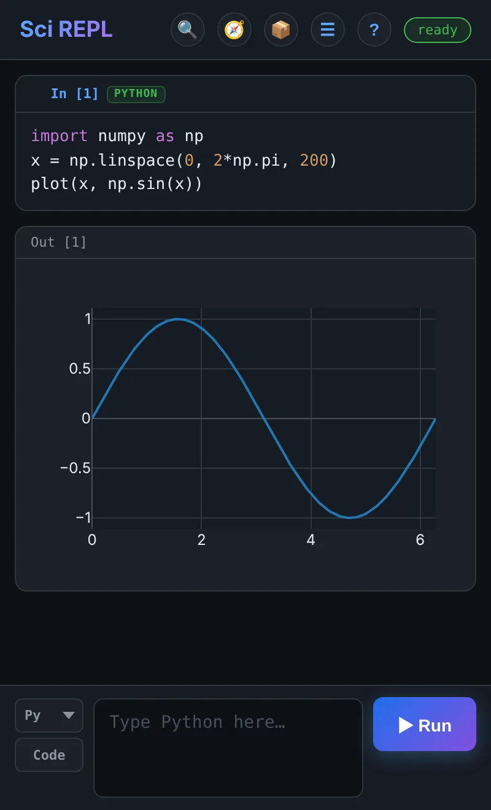
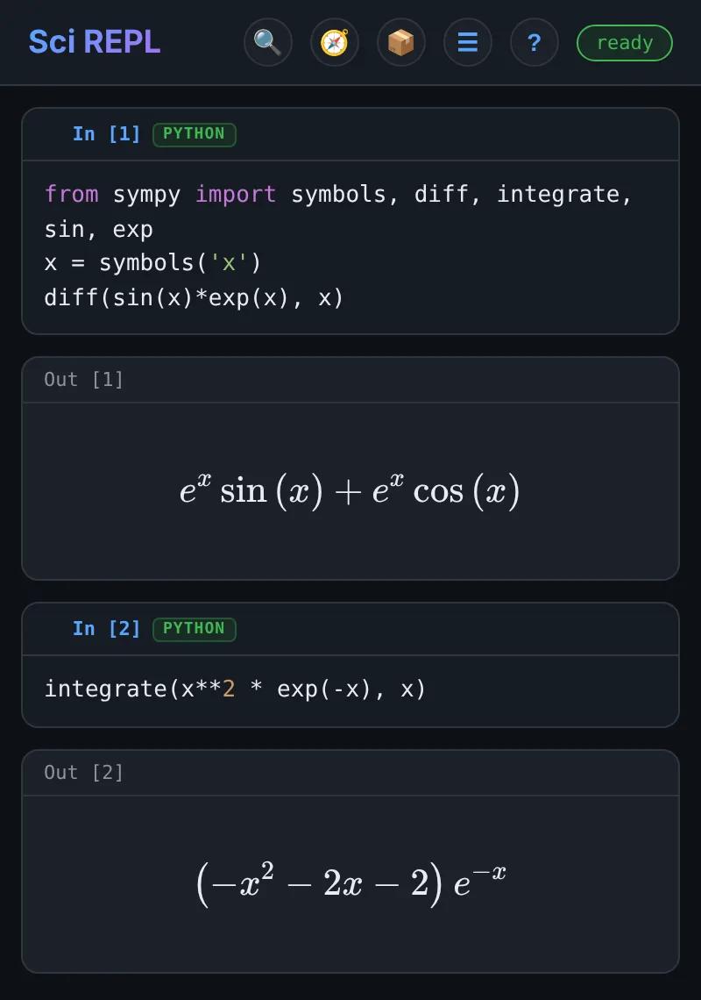
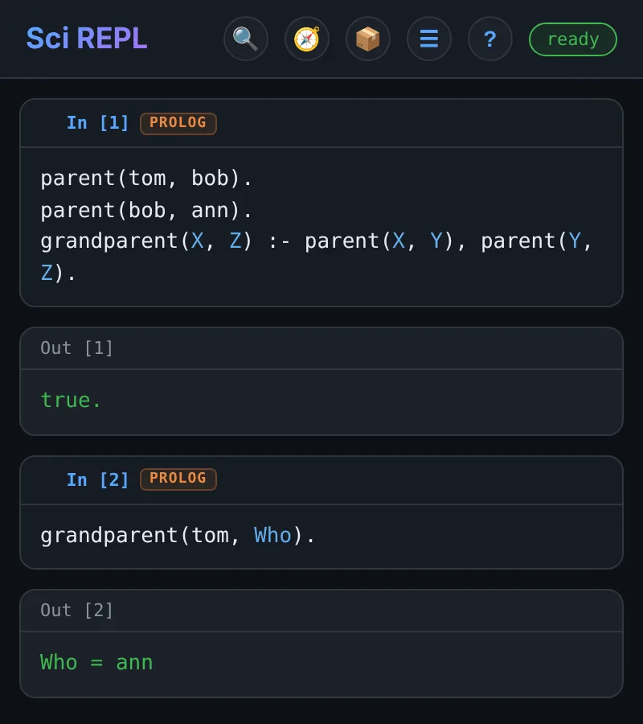

SciREPL for Android
Python notebooks on Android
Jupyter-style cells, outputs and interactive plots, running on your phone instead of a server. NumPy and SymPy are built in, and .ipynb files open with their outputs intact.
One-time purchase · No subscription · No ads · Android 7.0+ · Or try the free web version in your browser.
- Python
- NumPy
- SymPy
- Interactive plots
- R
- Prolog
- .ipynb import/export
- Works offline

A notebook built for a phone screen
Cells, like Jupyter
Write code in a cell, press Run, and the output appears below it. Variables carry over between cells, and you can edit, re-run, reorder or delete any cell.
Kernels run on the device
Python runs inside the app through Pyodide (WebAssembly), with NumPy and SymPy preloaded. No server or account is involved.
Rich output
SymPy results render as typeset math. plot() draws charts you can pinch-zoom and pan, and Matplotlib's plt.show() renders inline images.
Notes between the code
Switch a cell from Code to Md to write Markdown with $inline$ and $$display$$ LaTeX math.
Try these examples
Each screenshot is real output from the code beside it. Paste the code into a cell and press Run.
Plot a function
plot() is built in. The chart is interactive: pinch to zoom, drag to pan, and tap a point to read its value.
import numpy as np
x = np.linspace(0, 2*np.pi, 200)
plot(x, np.sin(x))This is the cell in the screenshot at the top of the page.
Symbolic math with SymPy
Differentiate, integrate and solve, with results rendered as LaTeX. The ∑ Math Mode button inserts common SymPy functions, so there is less to type on a phone keyboard.
from sympy import symbols, diff, integrate, sin, exp
x = symbols('x')
diff(sin(x)*exp(x), x)
# next cell
integrate(x**2 * exp(-x), x)
Mix in other languages
Each cell has its own language. Choose PL in the language selector to write Prolog. R, Bash, JavaScript, Lua and others work the same way, and every language can read and write the same files under /shared.
parent(tom, bob).
parent(bob, ann).
grandparent(X, Z) :- parent(X, Y), parent(Y, Z).
% next cell
grandparent(tom, Who).
Bring your notebooks with you
SciREPL reads and writes the standard Jupyter format, so work moves between your phone and a laptop.
- Open
.ipynbfiles with ☰ Menu → Import File. Saved outputs (text, images, LaTeX, tables) show straight away, without re-running anything. - Export back to
.ipynbwith outputs included, so the notebook still displays in Jupyter or on GitHub. - Export a readable document as HTML, Markdown, PDF, DOCX or LaTeX, with highlighted code, plots and equations.
- Also imports
.pyand.plsource files, CSV data, and SciREPL's own.srwbworkbooks. - Keep several notebooks open in tabs. They save automatically and come back when you reopen the app.
- Send a notebook anywhere with Android's share sheet.
Free or Pro?
Both editions run the same notebook. Pro bundles every runtime for offline use and adds the AI features.
| SciREPL (free) | SciREPL Pro | |
|---|---|---|
| Python with NumPy and SymPy | Yes | Yes |
| Prolog, Bash, JavaScript, Lua, TypR, ClojureScript | Yes | Yes |
| R (webR) | Downloads on first use (~50 MB) | Yes, bundled for offline use |
.ipynb import/export; HTML, PDF, DOCX, LaTeX export | Yes | Yes |
| AI assistant and AI code completion | — | Yes, using an AI service you choose |
| MCP and remote-agent clients | — | Yes |
| Windows build | — | Preview (unsigned) |
| Price | Free | One-time purchase |
What it is not built for
Worth knowing before you install:
- Python runs as WebAssembly, so heavy numerical work is slower than native Python on a laptop.
%pip installworks for pure-Python packages from PyPI. Packages with compiled C extensions need a prebuilt WebAssembly version, and many do not have one.- There is no GPU, so it is not for training machine-learning models or processing very large datasets.
- Installing extra Python or R packages needs a network connection. The bundled runtimes do not.
- It is single-user: there is no real-time collaboration or shared server.
- Requires Android 7.0 or later. There is no iOS version; Pro also has an unsigned Windows preview.
Get started
- Install SciREPL Pro, or the free edition, from Google Play.
- Open the app. The input bar is at the bottom: pick a language on the left (Py, R, PL…), type some code, and press ▶ Run.
- Paste one of the examples above to check that everything works.
- To open an existing notebook, use ☰ Menu → Import File and choose a
.ipynbfile. - Tap ? in the header for the built-in help. Every help example can be copied, or inserted as a new cell.
Carry your notebooks in your pocket
SciREPL Pro is a one-time purchase on Google Play, with no subscription and no ads. Or start with the free edition: notebooks move between the two as .ipynb files.